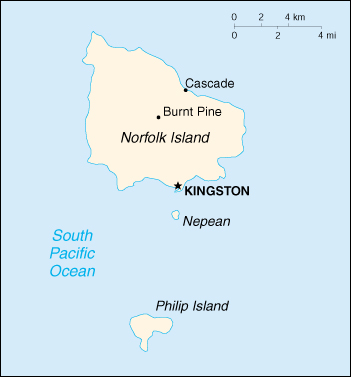

(territory of Australia)

|
Norfolk Island (territory of Australia) |
|
| Introduction Geography People Government Economy Communications Transportation Military Transnational Issues | ||
|  | ||
| Norfolk Island | Introduction | Top of Page |
| Background: | Two British attempts at establishing the island as a penal colony (1788-1814 and 1825-55) were ultimately abandoned. In 1856, the island was resettled by Pitcairn Islanders, descendants of the Bounty mutineers and their Tahitian companions. |
| Norfolk Island | Geography | Top of Page |
| Location: | Oceania, island in the South Pacific Ocean, east of Australia |
| Geographic coordinates: | 29 02 S, 167 57 E |
| Map references: | Oceania |
| Area: |
total:
34.6 sq km
land: 34.6 sq km water: 0 sq km |
| Area - comparative: | about 0.2 times the size of Washington, DC |
| Land boundaries: | 0 km |
| Coastline: | 32 km |
| Maritime claims: |
exclusive fishing zone:
200 NM
territorial sea: 3 NM |
| Climate: | subtropical, mild, little seasonal temperature variation |
| Terrain: | volcanic formation with mostly rolling plains |
| Elevation extremes: |
lowest point:
Pacific Ocean 0 m
highest point: Mount Bates 319 m |
| Natural resources: | fish |
| Land use: |
arable land:
0%
permanent crops: 0% permanent pastures: 25% forests and woodland: 0% other: 75% (1993 est.) |
| Irrigated land: | NA sq km |
| Natural hazards: | typhoons (especially May to July) |
| Environment - current issues: | NA |
| Norfolk Island | People | Top of Page |
| Population: | 1,879 (July 2001 est.) |
| Age structure: |
0-14 years:
NA%
15-64 years: NA% 65 years and over: NA% |
| Population growth rate: | -0.71% (2001 est.) |
| Birth rate: | NA births/1,000 population |
| Death rate: | NA deaths/1,000 population |
| Net migration rate: | NA migrant(s)/1,000 population |
| Infant mortality rate: | NA deaths/1,000 live births |
| Life expectancy at birth: |
total population:
NA years
male: NA years female: NA years |
| Total fertility rate: | NA children born/woman |
| HIV/AIDS - adult prevalence rate: | NA% |
| HIV/AIDS - people living with HIV/AIDS: | NA |
| HIV/AIDS - deaths: | NA |
| Nationality: |
noun:
Norfolk Islander(s)
adjective: Norfolk Islander(s) |
| Ethnic groups: | descendants of the Bounty mutineers, Australian, New Zealander, Polynesians |
| Religions: | Anglican 39%, Roman Catholic 11.7%, Uniting Church in Australia 16.4%, Seventh-Day Adventist 4.4%, none 9.2%, unknown 16.9%, other 2.4% (1986) |
| Languages: | English (official), Norfolk a mixture of 18th century English and ancient Tahitian |
| Norfolk Island | Government | Top of Page |
| Country name: |
conventional long form:
Territory of Norfolk Island
conventional short form: Norfolk Island |
| Dependency status: | territory of Australia; Canberra administers Commonwealth responsibilities on Norfolk Island through the Department of Environment, Sport, and Territories |
| Government type: | NA |
| Capital: | Kingston |
| Administrative divisions: | none (territory of Australia) |
| Independence: | none (territory of Australia) |
| National holiday: | Pitcairners Arrival Day, 8 June (1856) |
| Constitution: | Norfolk Island Act of 1979 |
| Legal system: | based on the laws of Australia, local ordinances and acts; English common law applies in matters not covered by either Australian or Norfolk Island law |
| Suffrage: | 18 years of age; universal |
| Executive branch: |
chief of state:
Queen ELIZABETH II (since 6 February 1952); the UK and Australia are represented by Administrator Anthony J. MESSNER (since 4 August 1997)
head of government: Assembly President and Chief Minister Ronald Coane NOBBS (since 23 February 2000) cabinet: Executive Council is made up of four of the nine members of the Legislative Assembly; the council devises government policy and acts as an advisor to the Administrator elections: the monarch is hereditary; administrator appointed by the governor general of Australia; chief minister elected by the Legislative Assembly for a term of not more than three years; election last held 23 February 2000 (next to be held by March 2003) election results: Ronald Coane NOBBS elected chief minister; percent of Legislative Assembly vote - NA% |
| Legislative branch: |
unicameral Legislative Assembly (9 seats; members elected by electors who have nine equal votes each but only four votes can be given to any one candidate; members serve three-year terms)
elections: last held 23 February 2000 (next to be held by March 2003) election results: percent of vote - NA%; seats - independents 9 |
| Judicial branch: | Supreme Court; Court of Petty Sessions |
| Political parties and leaders: | none |
| Political pressure groups and leaders: | none |
| International organization participation: | none |
| Diplomatic representation in the US: | none (territory of Australia) |
| Diplomatic representation from the US: | none (territory of Australia) |
| Flag description: | three vertical bands of green (hoist side), white, and green with a large green Norfolk Island pine tree centered in the slightly wider white band |
| Norfolk Island | Economy | Top of Page |
| Economy - overview: | Tourism, the primary economic activity, has steadily increased over the years and has brought a level of prosperity unusual among inhabitants of the Pacific islands. The agricultural sector has become self-sufficient in the production of beef, poultry, and eggs. |
| GDP: | purchasing power parity - $NA |
| GDP - real growth rate: | NA% |
| GDP - per capita: | purchasing power parity - $NA |
| GDP - composition by sector: |
agriculture:
NA%
industry: NA% services: NA% |
| Population below poverty line: | NA% |
| Household income or consumption by percentage share: |
lowest 10%:
NA%
highest 10%: NA% |
| Inflation rate (consumer prices): | NA% |
| Labor force: | 1,395 (1991 est.) |
| Labor force - by occupation: | tourism NA%, subsistence agriculture NA% |
| Unemployment rate: | NA% |
| Budget: |
revenues:
$4.6 million
expenditures: $4.8 million, including capital expenditures of $NA (FY92/93) |
| Industries: | tourism |
| Industrial production growth rate: | NA% |
| Electricity - production: | NA kWh |
| Electricity - production by source: |
fossil fuel:
NA%
hydro: NA% nuclear: NA% other: NA% |
| Electricity - consumption: | NA kWh |
| Agriculture - products: | Norfolk Island pine seed, Kentia palm seed, cereals, vegetables, fruit; cattle, poultry |
| Exports: | $1.5 million (f.o.b., FY91/92) |
| Exports - commodities: | postage stamps, seeds of the Norfolk Island pine and Kentia palm, small quantities of avocados |
| Exports - partners: | Australia, other Pacific island countries, NZ, Asia, Europe |
| Imports: | $17.9 million (c.i.f., FY91/92) |
| Imports - commodities: | NA |
| Imports - partners: | Australia, other Pacific island countries, NZ, Asia, Europe |
| Debt - external: | $NA |
| Economic aid - recipient: | $NA |
| Currency: | Australian dollar (AUD) |
| Currency code: | AUD |
| Exchange rates: | Australian dollars per US dollar - 1.7995 (January 2001), 1.7173 (2000), 1.5497 (1999), 1.5888 (1998), 1.3439 (1997), 1.2773 (1996) |
| Fiscal year: | 1 July - 30 June |
| Norfolk Island | Communications | Top of Page |
| Telephones - main lines in use: | 1,087 (1983) |
| Telephones - mobile cellular: | 0 (1983) |
| Telephone system: |
general assessment:
adequate
domestic: NA international: radiotelephone service with Sydney (Australia) |
| Radio broadcast stations: | AM 0, FM 3, shortwave 0 (1998) |
| Radios: | 2,500 (1996) |
| Television broadcast stations: | 1 (local programming station plus two repeaters that bring in Australian programs by satellite) (1998) |
| Televisions: | 1,200 (1996) |
| Internet country code: | .nf |
| Internet Service Providers (ISPs): | 2 (2000) |
| Internet users: | NA |
| Norfolk Island | Transportation | Top of Page |
| Railways: | 0 km |
| Highways: |
total:
80 km
paved: 53 km unpaved: 27 km (2001) |
| Waterways: | none |
| Ports and harbors: | none; loading jetties at Kingston and Cascade |
| Merchant marine: | none (2000 est.) |
| Airports: | 1 (2000 est.) |
| Airports - with paved runways: |
total:
1
1,524 to 2,437 m: 1 (2000 est.) |
| Norfolk Island | Military | Top of Page |
| Military - note: | defense is the responsibility of Australia |
| Norfolk Island | Transnational Issues | Top of Page |
| Disputes - international: | none |
{kind=link}